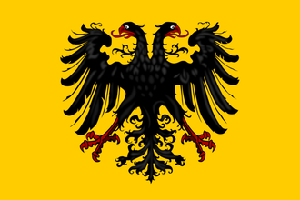
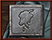
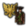
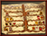

| 伊比利亞 |
| 法蘭西 |
| 低地 |
| 不列顛 |
| 北歐及波羅的 |
| 中歐 |
| 北德意志 |
| 南德意志 |
| 意大利 |
| 巴爾幹及安納托利亞 |
| 東歐 |
|  | |
|---|---|
| 神聖羅馬帝國 | |
| 政府等級 | |
| 主流文化 | |
| 首都 | |
| 政體 | 神聖帝國君主制 |
| 國教 | |
| 科技組 | |
| 神聖羅馬帝國的理念 |
此信息可能已落後版本，最後更新於1.35 ----
|
| +2 外交聲譽 +1 可行的政策 |
| +5% 行政效率
|
|
|
神聖羅馬帝國（英文：Holy Roman Empire）是遊戲中一個獨一無二的政治結構，由德意志區域及意大利半島北部眾多大小各異的國家組成。其成員國可視作「諸侯國」，各國統治者則為「諸侯」。其中七位諸侯有權在上任帝國皇帝死後選舉出下任皇帝，這七位諸侯被稱為「選帝侯」。神聖羅馬帝國皇帝擁有許多權力，同時也要擔起不小的責任，他不僅要保護帝國疆界，還要維護宗教信仰和文化傳統。
歷史上，神聖羅馬帝國從10世紀末建立開始，一直存續到19世紀初，最多時同時有300多個諸侯。查理大帝作為法蘭克國王，於公元800年在羅馬由教宗加冕為「羅馬人的皇帝」，而他的帝國後來被他的子孫們於843年瓜分。直到962年，東法蘭克王國的奧托一世再次被加冕為「羅馬皇帝」，並宣告神聖羅馬帝國的建立。直到  施瓦本的霍亨斯陶芬王朝的腓特烈一世（「巴巴羅薩」，1155-1190年在位）時期，這個帝國始被稱為「神聖羅馬帝國」，此前它的稱呼一直是「羅馬帝國」。神聖羅馬帝國一直認為自己是
施瓦本的霍亨斯陶芬王朝的腓特烈一世（「巴巴羅薩」，1155-1190年在位）時期，這個帝國始被稱為「神聖羅馬帝國」，此前它的稱呼一直是「羅馬帝國」。神聖羅馬帝國一直認為自己是  羅馬帝國的繼承者，儘管其從未直接將
羅馬帝國的繼承者，儘管其從未直接將  教宗國及其治下的
教宗國及其治下的 拜占庭還在苟延殘喘，同時，直到1479年之前，還有多個拜占庭繼承國存在，如
拜占庭還在苟延殘喘，同時，直到1479年之前，還有多個拜占庭繼承國存在，如  特拉比松等。在中世紀末期，帝國經歷了大量的權力下放，這可以在遊戲內特殊的帝國系統中看出。諸侯、選帝侯和皇帝之間的權力鬥爭永無止息，本就薄弱的帝國統一性更是在宗教改革中消耗殆盡；但帝國一直是歐洲政治中不可忽視的一個特殊架構。
特拉比松等。在中世紀末期，帝國經歷了大量的權力下放，這可以在遊戲內特殊的帝國系統中看出。諸侯、選帝侯和皇帝之間的權力鬥爭永無止息，本就薄弱的帝國統一性更是在宗教改革中消耗殆盡；但帝國一直是歐洲政治中不可忽視的一個特殊架構。
自15世紀中期，也就是1444年遊戲開始前後起，帝國皇帝的頭銜幾乎一直被  奧地利的統治家族——哈布斯堡王朝，及後繼的哈布斯堡-洛林王朝所掌控，僅在1742-1745年間短暫地落於
奧地利的統治家族——哈布斯堡王朝，及後繼的哈布斯堡-洛林王朝所掌控，僅在1742-1745年間短暫地落於  巴伐利亞的維特爾斯巴赫王朝手中。最終，在1806年，在拿破崙的威逼下，帝國皇帝弗朗茨二世[2]宣佈放棄皇帝尊號、終結對帝國諸侯名義上的宗主權，神聖羅馬帝國從此宣告解體。
巴伐利亞的維特爾斯巴赫王朝手中。最終，在1806年，在拿破崙的威逼下，帝國皇帝弗朗茨二世[2]宣佈放棄皇帝尊號、終結對帝國諸侯名義上的宗主權，神聖羅馬帝國從此宣告解體。
本頁面主要介紹名為  神聖羅馬帝國的特殊遊戲機制的相關內容。帝國皇帝可以通過帝國改革將帝國整合為單一的同名國家——
神聖羅馬帝國的特殊遊戲機制的相關內容。帝國皇帝可以通過帝國改革將帝國整合為單一的同名國家——  神聖羅馬帝國（tag代碼為
神聖羅馬帝國（tag代碼為HLR）。清注意區分這兩個概念的不同之處。本頁面中列出的國家信息框和  國家理念是國家
國家理念是國家  神聖羅馬帝國的相關信息。
神聖羅馬帝國的相關信息。
在中文玩家圈中，神聖羅馬帝國經常被簡稱為「神羅」。
神聖羅馬帝國介面的入口是遊戲介面底部（只會在帝國存在且在玩家視野範圍內時出現）的一個以帝國的雙頭鷹環繞的小盾牌。圖標下方顯示的數字代表現任皇帝當前的帝國權威。
該介面中，眾多大大小小的盾牌圖標代表了神聖羅馬帝國的各諸侯國， 點擊任一盾牌可以打開對應國家的外交介面，讓你可以檢視該國並與之進行外交互動。
皇帝是神聖羅馬帝國的領袖，有着保護和維持成員國主權的責任。帝國皇帝的政府等級固定為  帝國級。
帝國級。
 奧地利大公
奧地利大公
皇帝一旦被選舉後將擔任終身。在現任皇帝死後或者不具備作為皇帝的資質後，選帝侯們會從基督教世界中重新選出一個皇帝。現任皇帝不再滿足資格或者被吞併時，帝國內也將會選出一個新的皇帝。符合成為皇帝資質的宗教在遊戲開始時是  天主教，而在宗教聯盟產生結果後則由戰爭結果決定。
天主教，而在宗教聯盟產生結果後則由戰爭結果決定。
成為皇帝需要滿足的條件有如下：
如果沒有符合條件的皇帝候選人（一般是因為所有符合宗教戰爭結果宗教的國家都是女性君主），神聖羅馬帝國將會自動解散，儘管這種情況在遊戲中很難自然發生。
請注意，被選舉的帝國皇帝並不一定要是帝國的成員，即選帝侯也可以為帝國以外符合條件的國家投票，但一般AI選帝侯會更願意選舉帝國成員為新皇帝。
選舉的結果是瞬間產生的，得到最多票數的候選人將成為皇帝。在神聖羅馬帝國介面可以查看各選帝侯在當前皇帝死後將如何投票選舉下一任皇帝。如果現任皇帝的繼承人與其他候選人的票數持平，那麼仍由其繼承人繼任下屆皇帝；如果最高票數持平的候選人中沒有現任皇帝的繼承人，那麼  威望最高的候選人將成為皇帝。
威望最高的候選人將成為皇帝。
現任皇帝如果在宗教戰爭中途去世，則其繼承人自動繼承皇位。
值得注意的是，當宗教聯盟戰爭結果決出  新教或為帝國的官方信仰時，前任皇帝作為天主教國家顯然不再符合條件。那麼剩餘的選帝侯（這種情況下只有信仰新教或改革宗的選帝侯在宗教戰爭後能依然保有選帝侯席位）也會選出一位新的、符合條件的新教君主作為新任皇帝，但這時無法預先查看當選的皇帝將是來自哪個國家。這意味着當玩家作為新教國家挑戰原來的皇帝成功後，如果想當上皇帝，在勝券在握、已經準備與現任皇帝和談宣佈新教為帝國官方信仰之前，最好能提前加強與那些新教選帝侯的關係，或儘可能增加外交聲譽、正統性等，以提高當選的可能性。DLC
新教或為帝國的官方信仰時，前任皇帝作為天主教國家顯然不再符合條件。那麼剩餘的選帝侯（這種情況下只有信仰新教或改革宗的選帝侯在宗教戰爭後能依然保有選帝侯席位）也會選出一位新的、符合條件的新教君主作為新任皇帝，但這時無法預先查看當選的皇帝將是來自哪個國家。這意味着當玩家作為新教國家挑戰原來的皇帝成功後，如果想當上皇帝，在勝券在握、已經準備與現任皇帝和談宣佈新教為帝國官方信仰之前，最好能提前加強與那些新教選帝侯的關係，或儘可能增加外交聲譽、正統性等，以提高當選的可能性。DLC  皇帝開啟時，改革宗通過帝國事變成為官方宗教時，情況也相似。
皇帝開啟時，改革宗通過帝國事變成為官方宗教時，情況也相似。
帝國皇帝享有如下增益效果：[3]
| +10% | 間諜網效率 | |
| +1 | 可選顧問數量 | |
| +1 | 外交關係數量 | |
| +1 | 免維持費的將領數量 | |
| +1 | 年威望增長 |
另外，帝國每有一個成員國：[4]
| +0.5 | 陸軍規模上限 | |
| +500 | 人力 |
另外，帝國每有一個自由市：[5]
| +2 | 稅收收入 | |
| +0.5 | 陸軍規模上限 | |
| +1000 | 人力 |
皇帝固定為  帝國政府等級，因此可以享受這一最高等級帶來的其它優勢。
帝國政府等級，因此可以享受這一最高等級帶來的其它優勢。
作為帝國皇帝擁有以下權力（或義務）：
擔任帝國皇帝的國家可以通過這個外交行動，以 帝國權威 -1 為代價，獲得與另一個帝國成員外交關係 +41 的加成。這個關係加成將一直持續到此國家失去皇位為止。
帝國權威 -1 為代價，獲得與另一個帝國成員外交關係 +41 的加成。這個關係加成將一直持續到此國家失去皇位為止。
帝國皇帝可以在神聖羅馬帝國介面上發起關於帝國改革的投票。不同於EU3，不需要發起投票，把鼠標移到每個改革措施上，皇帝可以看到帝國諸侯將會怎麼投票，同時，將鼠標移到代表每個諸侯的盾徽上，可以看見它為什麼支持或為什麼反對這個改革。一個諸侯對一個改革的意向很大程度上取決於他於帝國皇帝之間的關係、帝國權威的多寡以及帝國皇帝的外交威望。
帝國皇帝可以通過外交行動指定一個帝國內的一地國家成為自由市。自由市的政府體制將轉變為一種獨特的共和國，不僅會獲得  稅收增益，還可以在任何時候召喚帝國皇帝參加防禦戰，即使是帝國內部的戰爭。帝國範圍內最多可以有15個自由市，僅限皇帝實行分權制帝國改革，否則皇帝僅能持有12個自由市。皇帝也會根據自由市數量獲得不同幅度的
稅收增益，還可以在任何時候召喚帝國皇帝參加防禦戰，即使是帝國內部的戰爭。帝國範圍內最多可以有15個自由市，僅限皇帝實行分權制帝國改革，否則皇帝僅能持有12個自由市。皇帝也會根據自由市數量獲得不同幅度的  稅收，
稅收， 人力和
人力和  帝國權威的增益效果。一個自由市如果獲得第2個省份，它將自動失去自由市身份。同時，自由市不能成為選帝侯。君主制國家對於接受「成為自由市」的外交提議有 -50 的懲罰，神權國則有 -100 的懲罰，所以如果你要創建新的自由市，放出那些一地的共和國會比較容易。除此以外，對帝國皇帝的外交態度為「受到威脅」的國家有 +20 的增益，「友好」或者處於同盟狀態的國家有 +10 的增益，外交關係可以提供最多 +20 的增益，每點外交信譽也會產生 +3 的增益。
帝國權威的增益效果。一個自由市如果獲得第2個省份，它將自動失去自由市身份。同時，自由市不能成為選帝侯。君主制國家對於接受「成為自由市」的外交提議有 -50 的懲罰，神權國則有 -100 的懲罰，所以如果你要創建新的自由市，放出那些一地的共和國會比較容易。除此以外，對帝國皇帝的外交態度為「受到威脅」的國家有 +20 的增益，「友好」或者處於同盟狀態的國家有 +10 的增益，外交關係可以提供最多 +20 的增益，每點外交信譽也會產生 +3 的增益。
當帝國外勢力向帝國諸侯宣戰、或帝國諸侯之間無宣戰理由開戰時，帝國皇帝將收到戰爭召喚。不同於尋常召喚，它不會影響威望，而是會影響帝國權威。如果帝國皇帝拒絕了這種召喚，帝國權威將會 -10。而如果皇帝加入並贏得了此次戰爭，帝國權威將會增加。無論最終結果如何，每次響應都會給皇帝與每個帝國成員一個 +50 關係加成以及與選帝侯間的 +100 關係加成。發起召喚的國家還會額外有 +10 的關係加成。
帝國皇帝能夠以  -10 帝國權威的代價剝奪一個國家的選帝侯身份，同時這也將惡化大大皇帝與所有選帝侯國家的外交關係。這個行動只有在帝國有唯一的官方正統信仰、且這個選帝侯信仰異端宗教時才可用，在宗教和平狀態下或宗教聯盟未結束前不可使用。
-10 帝國權威的代價剝奪一個國家的選帝侯身份，同時這也將惡化大大皇帝與所有選帝侯國家的外交關係。這個行動只有在帝國有唯一的官方正統信仰、且這個選帝侯信仰異端宗教時才可用，在宗教和平狀態下或宗教聯盟未結束前不可使用。
在DLC  常識 開啟的條件下，剝奪選帝侯是一種外交行動，而當沒有
常識 開啟的條件下，剝奪選帝侯是一種外交行動，而當沒有  常識 時取消選帝侯身份需要戰爭：在以「剝奪選帝侯身份」為宣戰理由的戰爭中，帝國皇帝可以在和約中要求剝奪失敗方的選帝侯身份。
常識 時取消選帝侯身份需要戰爭：在以「剝奪選帝侯身份」為宣戰理由的戰爭中，帝國皇帝可以在和約中要求剝奪失敗方的選帝侯身份。
如果帝國內選帝侯數量未滿，皇帝就可以指定帝國內任何一個獨立國家成為新的選帝侯。這個行動會使皇帝與目標國家之間的外交關係獲得 +50 加成。皇帝不能指定自由市、附屬國或他自己成為選帝侯。在帝國確立了官方信仰後，只有信仰官方宗教的國家能被任命為選帝侯。
在第一項帝國改革「要求改革」通過後，帝國皇帝會獲得針對那些佔有了帝國領土的帝國外國家的宣戰理由，比如遊戲開始時的  勃艮第 和
勃艮第 和  威尼斯。在神聖羅馬帝國地圖視角下，被帝國外國家佔有的領土會被黃色條紋標記。如果有其他外部國家割佔了這些帝國省份，帝國皇帝將取得該省份的 宣稱。
威尼斯。在神聖羅馬帝國地圖視角下，被帝國外國家佔有的領土會被黃色條紋標記。如果有其他外部國家割佔了這些帝國省份，帝國皇帝將取得該省份的 宣稱。
針對那些吞併了帝國成員的國家，帝國皇帝會獲得一個目標為解放被吞併諸侯的宣戰理由。戰爭勝利、成功解放帝國成員會獲得帝國權威。這個宣戰理由在帝國成員被吞併時獲得，並會持續60個月（五年）。
此外交行動僅在宗教戰爭結束後，且帝國的正統信仰為天主教或新教或改革宗時才可用————也就是說，當威斯特伐利亞和約被簽署，帝國達成了宗教和平，那麼此外交行動將不可用。（詳情請參見宗教戰爭）。
帝國皇帝可以通過這個外交行動，要求帝國內的異端諸侯改宗為帝國皇帝的信仰，但是無論對方的答覆是什麼，皇帝都必須付出  -1 帝國權威的代價。
-1 帝國權威的代價。
外交對象國是否接受要求，取決於其對帝國皇帝的外交態度、帝國皇帝的外交聲譽和威望、外交對象國的省份數目、是否屬於選帝侯等因素。如果目標國家是選帝侯、自由市或者宗教守護者，那麼他接受要求的可能性會獲得一個 −1000 的減成，這使得和平解決完全不可行。
如果外交對象國接受要求，該國將改宗為帝國皇帝的信仰，並有一個省份自動改宗。帝國皇帝與信奉該異端信仰的其他帝國諸侯的外交關係獲得一個可疊加的 -25 的懲罰。如果外交對象國拒絕要求，則帝國皇帝受到威望懲罰，但獲得一個針對目標國的宣戰理由。
帝國皇帝可以要求目標國——無論是否為帝國諸侯，歸還佔據的 不是其核心領土的 帝國省份。拒絕該外交要求會使帝國皇帝獲得一個「帝國解放」的宣戰理由，並使 目標國 與 其他帝國諸侯的 外交關係降低。
「非法領土」的判斷依據是佔領國是否完成核心建造。拒絕帝國皇帝歸還領土的要求，還會導致目標國叛亂值升高、稅收和人力的降低，以及該國所有新近征服省份的自治度逐月上升。奉旨造反
拒絕要求會導致  -1 帝國權威。這個外交行動會使皇帝與目標之間的外交關係 -100 。所以如果一個選帝侯佔有了非法領土，不理睬可能會比較合算。如果一塊地被第二次要求歸還非法領土，那麼歸還之後將會納入帝國皇帝的控制。
-1 帝國權威。這個外交行動會使皇帝與目標之間的外交關係 -100 。所以如果一個選帝侯佔有了非法領土，不理睬可能會比較合算。如果一塊地被第二次要求歸還非法領土，那麼歸還之後將會納入帝國皇帝的控制。
每一點  帝國權威會增加1點AI選帝侯對現任皇帝連任的支持傾向。
帝國權威會增加1點AI選帝侯對現任皇帝連任的支持傾向。
若在現任皇帝駕崩後下任皇帝仍然由同一國家的君主擔任，那麼皇帝會獲得10點 帝國權威。
帝國權威。
 帝國權威可以用來進行帝國改革，或者使用皇帝能力與成員國交互。要通過改革的話，需要至少 50 點帝國權威，以及帝國內一半以上成員國的贊同。當改革通過，當前所有的帝國權威會清零。特定的帝國改革、部分國家的國家理念、事件和任務樹獎勵都能增加帝國權威的增長速度。
帝國權威的最大值為 100。
帝國權威可以用來進行帝國改革，或者使用皇帝能力與成員國交互。要通過改革的話，需要至少 50 點帝國權威，以及帝國內一半以上成員國的贊同。當改革通過，當前所有的帝國權威會清零。特定的帝國改革、部分國家的國家理念、事件和任務樹獎勵都能增加帝國權威的增長速度。
帝國權威的最大值為 100。
帝國權威會因以下行動而變動：
帝國權威的增長可以受到以下修正：
| 條件 | |
|---|---|
| +25% | 通過集權帝國改革「削弱帝國等級」 |
| +25% | 通過集權帝國改革「宣佈實行世襲制」 |
| +25% | 通過集權帝國改革「撤銷特權」 |
| +25% | 觸發修正「天主教帝國」或「新教帝國」或「改革宗帝國」 |
| +1% × （通過該項改革時的諸侯數目- 25） | 通過分權帝國改革「採用問責制度」 |
| 傳統 | 理念 | 獎勵/野心 | 政策 | |
|---|---|---|---|---|
| +10% |
|
|
— | — |
在特定的情況下，如果當前的皇帝有一位女性繼承人，那麼其可以通過一項決議，使得在未來女性也可以成為帝國皇帝。如果第六項改革「宣佈實行世襲制」已經通過了，則這項決議不必通過，壟斷皇位的國家的女性繼承人也一定繼承皇位。歷史上，在1713年，皇帝查理六世在沒有男性繼承人的情況下頒佈了《國事詔書》，以確定將繼承權留給自己的女兒瑪利亞·特蕾莎；儘管如此，奧地利王位繼承戰爭仍然在1740年爆發了。
|
|
這條信息可能已不適合當前版本，最後更新於1.32。 |
我國的繼承人是女性，但帝國皇位只能傳給男性。我們絕不能坐視辛苦奪來的皇位因這個無足輕重的法律細節而丟失。讓我們對此施加影響，確保女性繼承人也能有資格參與神聖羅馬帝國皇帝選舉。
潛在需求
|
接受
|
效果
| |
AI決議因子：
|
|
這條信息可能已不適合當前版本，最後更新於1.32。 |
《國事詔書》，於[GetDateText]由皇帝$EMPERORNAME$鄭重簽署，確保了他的領地的不可分割性，並規定了由長至幼的繼承順序，即使是女性也有繼承權。$EMPERORNAME$亦準備讓他的女性繼承人準時繼承他的皇位。
觸發條件
|
只觸發於
Taking the decision 「國事詔書」 |
立即生效
| |
我們可以有一個女皇！
| |
當DLC  未啟用時，帝國皇帝可以通過將所有需要的省份加入帝國、並在1490年前通過該決議，以防止北意大利的諸侯通過「影子王國」事件離開帝國。
未啟用時，帝國皇帝可以通過將所有需要的省份加入帝國、並在1490年前通過該決議，以防止北意大利的諸侯通過「影子王國」事件離開帝國。
|
|
這條信息可能已不適合當前版本，最後更新於1.35。 |
多名先皇在將其權威加於意大利王國上失敗。如果要防止此地完全從帝國脫離的話，我們就必須有力地將權威加於北意大利。
潛在需求
|
接受
|
效果
| |
AI決議權重：
選帝侯指的是有權利投票選出下一任皇帝的國家。開局時，選帝侯有七個，這也是選帝侯席位的上限；當DLC  皇帝啟用時，如果實行了分權制改革，則可以在通過「採用問責制度」改革後，將選帝侯席位的上限改為8個。當選帝侯的數目不滿上限時，帝國皇帝可以指定帝國內任何一個獨立國家成為新的選帝侯。選帝侯們誓死捍衛自己的權利，所以他們不會願意選擇一個附庸了選帝侯的國家上台。帝國皇帝可以對信奉異端的選帝侯發起戰爭，要求其改宗；在常識DLC後，也可以通過外交行動剝奪它的選帝侯身份（不再能發動戰爭）。選帝侯可以選擇帝國外成員成為新任皇帝。
皇帝啟用時，如果實行了分權制改革，則可以在通過「採用問責制度」改革後，將選帝侯席位的上限改為8個。當選帝侯的數目不滿上限時，帝國皇帝可以指定帝國內任何一個獨立國家成為新的選帝侯。選帝侯們誓死捍衛自己的權利，所以他們不會願意選擇一個附庸了選帝侯的國家上台。帝國皇帝可以對信奉異端的選帝侯發起戰爭，要求其改宗；在常識DLC後，也可以通過外交行動剝奪它的選帝侯身份（不再能發動戰爭）。選帝侯可以選擇帝國外成員成為新任皇帝。
所有AI控制的選帝侯會各自根據一定的投票準則選出他願意投票支持的國家；如果玩家是選帝侯，那麼可以自由選擇支持任何符合條件的國家成為下一屆皇帝。
選擇支持一個國家成為下任皇帝可以增進目標國家與這個選帝侯國家的關係（+25，年度變化-2）；而改換支持對象也會降低原來受支持的國家與這個選帝侯的關係（-25，年度變化+1）。
儘管集權制帝國改革第三項改革「宣佈實行世襲制」通過後皇帝世襲、不由選帝侯選舉，但選帝侯的身份仍會繼續保留，不過不能選舉皇帝。也不能設置新的選帝侯，選帝侯的缺失也不會對帝國權威造成影響。
注意，如果帝國內不存在選帝侯，則皇帝自動變為世襲，此時無法再解散帝國。若你打算通過強制改宗剝奪選帝侯甚至強行吞併選帝侯以降低解散神聖羅馬帝國的難度，記得留下至少一個選帝侯。
1444年開局時的選帝侯：
開局時不是選帝侯的國家可能通過三種方式獲得選帝侯席位。
首先，如果一個帝國內沒有選帝侯身份的國家聯合統治了一個選帝侯，並最終自然繼承了這個國家後，選帝侯的身份會一併被繼承，外交合併無法繼承選帝侯席位；但如果這個主聯統國不是帝國成員，那麼繼承選帝侯國家後這個選帝侯席位會被直接取消，而非被這個帝國外國家繼承。此外，如果主聯統國已經是選帝侯，那麼繼承另一個選帝侯國家後，被繼承國家的選帝侯席位也會直接取消。
第二種方法是在選帝侯席位有空缺時，被皇帝任命為選帝侯。AI控制的帝國皇帝更願意任命與之關係良好的國家為新的選帝侯；在帝國有官方信仰時，這個國家信仰的必須是帝國的官方正統宗教。此外，皇帝不會任命一個與之信仰宗教不相同的國家為新的選帝侯。AI皇帝在任命選帝侯時，鑑於體量更大的國家更可能取代它的皇位，因此會更傾向於體量較小的帝國成員，以更好地鞏固自己的皇位；皇帝也更傾向於任命不能被選為皇帝的神權國和共和國為新的選帝侯，但皇帝仍然通常不願意任命體量大的神權制或共和制國家。當一個帝國成員擁有多於5個省份時，每多一個省份都會降低皇帝任命它為新選帝侯的傾向。
因此，如果玩家想成為新的選帝侯，要麼聯合統治並直接繼承一個選帝侯，要麼等待一個選帝侯被吞併、並寄希望於皇帝任命你為新選帝侯，這需要你信仰主流宗教且與皇帝宗教相同、與皇帝關係很好，並且體量較小。如果選帝侯席位少於7個（實行分權制改革時為8個），但帝國內所有符合條件的國家都體量過大，那麼AI皇帝很可能滿足於缺少選帝侯的現狀而不急於任命新的選帝侯。
除了以上方法之外，還可用在屬國擁有選帝侯席位時，通過以下 3 種決議獲得選帝侯席位。
當有屬國是選帝侯時，可以選擇向皇帝提出：①以  6000購買屬國的選帝侯席位；②在與皇帝結盟，且滿足態度和信任度要求的前提下，直接向皇帝索求選帝侯席位。皇帝可以選擇拒絕；被拒絕後，只能在兩年後再選擇嘗試。非神聖羅馬帝國成員不可通過如下決議要求選帝侯席位；AI國家不會通過如下決議。
6000購買屬國的選帝侯席位；②在與皇帝結盟，且滿足態度和信任度要求的前提下，直接向皇帝索求選帝侯席位。皇帝可以選擇拒絕；被拒絕後，只能在兩年後再選擇嘗試。非神聖羅馬帝國成員不可通過如下決議要求選帝侯席位；AI國家不會通過如下決議。
|
|
這條信息可能已不適合當前版本，最後更新於1.35。 |
金幣是強大的工具。不僅是在商業的世界裏，也體現在國際政治中。從皇帝手中購買選帝侯席位或將成為可能。
潛在需求
|
接受
|
效果
| |
AI decision factors:
|
|
這條信息可能已不適合當前版本，最後更新於1.35。 |
由於我們與皇帝聯繫緊密，或許我們能夠要求皇帝將我們附屬國的選帝侯席位轉讓給我們。我們所需要做的就是友好地發出請求。
潛在需求
|
接受
|
效果
| |
AI decision factors:
當本國是皇帝，且有屬國是選帝侯時，可以直接花費  5 帝國權威，篡奪屬國的選帝侯席位；AI國家不會通過如下決議。
5 帝國權威，篡奪屬國的選帝侯席位；AI國家不會通過如下決議。
|
|
這條信息可能已不適合當前版本，最後更新於1.35。 |
由於我們是神聖羅馬帝國皇帝，我們有權按照我們的想法收回並重新分配選舉皇帝的權利。既然我們的一個屬國擁有這項權利，將其轉讓給我們是完全合理的。
潛在需求
|
接受
|
效果
| |
AI decision factors:
|
|
只適用於DLC皇帝激活時。 |
使用  巴伐利亞任務的國家、
巴伐利亞任務的國家、 圖林根和
圖林根和  匈牙利分別可以通過完成特定任務後觸發的事件，向帝國皇帝要求將屬國的選帝侯席位轉讓給本國。皇帝可能選擇拒絕。
匈牙利分別可以通過完成特定任務後觸發的事件，向帝國皇帝要求將屬國的選帝侯席位轉讓給本國。皇帝可能選擇拒絕。
AI選帝侯會參考以下標準作出他們的決定：
儘管有如上的投票規則，但對於一個AI選帝侯國家來說，如果有其它選帝侯支持它成為皇帝，它就會為自己投票，從而忽視以上的這些準則。即使沒有其他選帝侯願意支持，AI選帝侯也有可能堅持為自己投票而非遵循以上規則。
那些首都在帝國範圍內的國家被稱為「諸侯」或帝國成員（Princes）。以下列出1444年劇本開始時的所有非選帝侯國家，包括那些可能將因為「影子王國」事件離開帝國的意大利國家。下表包括了開局時的所有自由市，但未包括選帝侯國家。
在以上帝國成員中，有些開局時不是獨立國家，有些還被帝國外的國家控制着：  荷爾斯泰因被非帝國成員 (
荷爾斯泰因被非帝國成員 (  丹麥)附庸；
丹麥)附庸； 布拉班特、
布拉班特、 佛蘭德、
佛蘭德、 荷蘭被非帝國成員(
荷蘭被非帝國成員(  勃艮第)聯合統治。
勃艮第)聯合統治。
通常情況下，除皇帝以外，神聖羅馬帝國的成員國最多只能升至  王國級別的政府等級，不能成為
王國級別的政府等級，不能成為  帝國級政府。所有普通的成員國只能擁有
帝國級政府。所有普通的成員國只能擁有  公國級別的政府，只有選帝侯可以在發展度達到300時在政府介面選擇升格為
公國級別的政府，只有選帝侯可以在發展度達到300時在政府介面選擇升格為  王國級。當一個成員國成為了神聖羅馬帝國皇帝后，該成員國的政府等級將提升至
王國級。當一個成員國成為了神聖羅馬帝國皇帝后，該成員國的政府等級將提升至  帝國級政府。然而，因政府改革等原因擁有固定政府等級的國家不受上述限制，如
帝國級政府。然而，因政府改革等原因擁有固定政府等級的國家不受上述限制，如  教宗國、中國皇帝等。
教宗國、中國皇帝等。
特別地，級別為  公國、政府為
公國、政府為  神權制的選帝侯可以通過決議「將主教區升格為大主教區」升級為
神權制的選帝侯可以通過決議「將主教區升格為大主教區」升級為  王國級政府（不需要發展度達到300）。通過這個決議時，如果這個神權選帝侯的國教是
王國級政府（不需要發展度達到300）。通過這個決議時，如果這個神權選帝侯的國教是  天主教，那麼需要花費 -25
天主教，那麼需要花費 -25  教廷影響力，而如果國教不是天主教時無需額外花費。
教廷影響力，而如果國教不是天主教時無需額外花費。
開局時，帝國內有四個國家已經擁有  王國級政府，它們都是選帝侯國家：
王國級政府，它們都是選帝侯國家： 美因茨、
美因茨、 科隆、
科隆、 特里爾和
特里爾和  波希米亞；除此之外，還有一個
波希米亞；除此之外，還有一個  帝國級政府，即帝國皇帝
帝國級政府，即帝國皇帝  奧地利。其餘的國家開局時均為
奧地利。其餘的國家開局時均為  公國級。
公國級。
所有帝國成員可以將自己擁有的那些陸上接壤神聖羅馬帝國或者與帝國省份接鄰一片海域的、處在歐洲、宗教為基督教宗教組、且擁有核心的省份加入帝國，使其成為神聖羅馬帝國領土。可通過省份介面逐一將省份加入帝國，也可以通過神聖羅馬帝國介面一次性將所有符合條件的省份加入帝國。
AI皇帝總是會將符合條件的省份加入神聖羅馬帝國。其它AI諸侯國在與皇帝關係良好時，也總是傾向於將帝國外省份加入帝國。皇帝的  附庸國會將自己滿足條件的省份加入帝國，而
附庸國會將自己滿足條件的省份加入帝國，而 被聯統國不會。
被聯統國不會。
需要注意的是，經過測試，由於機制衝突，目前神聖羅馬帝國省份無法加入貿易公司（即使滿足加入貿易公司的一切其它條件）。
將省份加入帝國不會帶來  帝國權威增益。
帝國權威增益。
非帝國成員國可以在和平時期，通過在省份窗口點擊帝國圖標，選擇將一個已擁有核心的帝國省份移出帝國。這個舉動將會扣除 1 點帝國權威並大大影響你與帝國皇帝之間的關係。
帝國成員不能單獨把自己的某個已經是帝國領土的省份移出帝國，只能脫離神聖羅馬帝國，並同時將所有核心省份均移出帝國。
判定一個國家是否屬於帝國成員的唯一條件，就是其首都省份是否是帝國領土。帝國外的國家可以通過神聖羅馬帝國介面加入帝國。加入帝國後，所有符合條件的省份也被自動成為帝國省份。新國家加入帝國時，視其總發展度數值為帝國帶來  帝國權威。加入帝國需要滿足下列條件：（1）首都能夠通過陸路或海路直接與帝國相連；（2）皇帝對本國的
帝國權威。加入帝國需要滿足下列條件：（1）首都能夠通過陸路或海路直接與帝國相連；（2）皇帝對本國的  好感度超過一個閾值，該閾值與本國及附屬國發展度有關。上述閾值的計算公式為：
好感度超過一個閾值，該閾值與本國及附屬國發展度有關。上述閾值的計算公式為：
發展度為奇數時，乘以0.5後向下取整。因為好感度的上限是200，所以任何計入附屬國後發展度大於200的國家都無法將其省份加入帝國。同時因為公式對本國和附庸發展度妃權重相等，所以將省份分給附庸並不能幫助你加入帝國。
例如，1444年開局時， 威尼斯有175發展度，它有一個附庸國
威尼斯有175發展度，它有一個附庸國  納克索斯，其發展度為6。所以，
納克索斯，其發展度為6。所以， 威尼斯需要與皇帝至少有（100+87+3 =）190 點外交關係才能加入帝國。
威尼斯需要與皇帝至少有（100+87+3 =）190 點外交關係才能加入帝國。
注意，由附屬國擁有的日耳曼文化組省份的發展度不會被乘以0.5計算，而是以 1 的權重計入。例如，1444年開局時， 勃艮第 有147發展度；它的附庸國
勃艮第 有147發展度；它的附庸國  訥韋爾屬於法蘭西文化組，有27發展度；它的三個被聯統國
訥韋爾屬於法蘭西文化組，有27發展度；它的三個被聯統國  布拉班特、
布拉班特、 荷蘭和
荷蘭和  佛蘭德都屬於日耳曼文化組，且發展度分別為56、42和42。因此在理論上，根據公式，
佛蘭德都屬於日耳曼文化組，且發展度分別為56、42和42。因此在理論上，根據公式， 勃艮第需要與皇帝至少有 [100 + 73 + (56+42+42+13) =]326 點的外交關係；顯然，勃艮第在這種情況下是不可能主動把自己的省份加入帝國的。
勃艮第需要與皇帝至少有 [100 + 73 + (56+42+42+13) =]326 點的外交關係；顯然，勃艮第在這種情況下是不可能主動把自己的省份加入帝國的。
如果皇帝不是帝國成員，則無視對於好感度/發展度的上述要求，只需首都能與帝國省份接鄰即可加入帝國。
獨立的AI國家幾乎不會主動加入帝國。皇帝的附庸國在滿足條件時，會主動加入帝國；因此，在帝國外征服了有其他國家潛在核心的省份時，如果其與帝國通過陸路或海路接壤，且釋放後總發展度不大於200，則皇帝可以釋放該國家，而不必再由皇帝將對應省份核心化並將省份加入帝國。體量較小的AI國家在與皇帝的外交關係十分良好，且受到強大鄰國的威脅時，有可能主動加入帝國；這個傾向的數值與該國家「受到威脅的程度」與當前的帝國權威數值有關。
部分事件及帝國事變可能使得新的成員加入帝國，例如  東菲士蘭可以經過一個事件加入帝國；匈牙利、勃艮第等國家可能通過特殊的帝國事變加入帝國。
東菲士蘭可以經過一個事件加入帝國；匈牙利、勃艮第等國家可能通過特殊的帝國事變加入帝國。
皇帝可以通過外交行動，邀請其它符合條件的國家加入帝國。
同時，除了上述方式外，也可以通過將首都遷移至帝國省份自動加入帝國。雖然一般很難把首都加入或移出帝國，但依然可以通過某些事件或失去首都等方法來達到加入神聖羅馬帝國的目的，因此，無論帝國皇帝對你的態度如何，你都可以征服一塊帝國領土並造核，然後通過釋放附庸或和約送地等方式捨棄所有不屬於神聖羅馬帝國的領土，以確保首都自動遷至帝國內，從而加入帝國。
除帝國皇帝以外的帝國成員國可以在和平時期通過神聖羅馬帝國介面離開帝國。
脫離帝國會導致你所有非核心的帝國省份被割讓給帝國皇帝，同時你所有的核心省份會脫離帝國，還會極大地破壞你與帝國皇帝之間的外交關係，同時降低一大截帝國權威。
在大多數情況下，不是選帝侯、且不是皇帝的帝國成員一旦成立其他國家，便會自動離開帝國，並獲得與皇帝的大幅關係減成。這在成立  尼德蘭和
尼德蘭和  普魯士時較為常見。一個AI國家在不是選帝侯也不是皇帝時，不會成立任何會導致它離開帝國的可成立國家。
普魯士時較為常見。一個AI國家在不是選帝侯也不是皇帝時，不會成立任何會導致它離開帝國的可成立國家。
任何國家通過決議成立以下國家時，不會其導致離開帝國（因此AI在符合條件時也會成立這些國家）：
與加入帝國類似，也可以通過將遷都到非帝國省份來脫離神聖羅馬帝國，這個操作無法直接手動實現，但是可以通過丟地和特殊事件來達成。
一些帝國事變中的某些選項可能導致一些帝國成員離開帝國。「影子王國」可能導致北意大利地區的國家脫離帝國；「瑞士與帝國」可能導致  瑞士離開帝國；「尼德蘭起義」可能導致
瑞士離開帝國；「尼德蘭起義」可能導致  尼德蘭離開帝國；「在普魯士的國王」可能導致
尼德蘭離開帝國；「在普魯士的國王」可能導致  普魯士離開帝國；「改革宗諸侯抗議」可能導致
普魯士離開帝國；「改革宗諸侯抗議」可能導致  改革宗國家離開帝國；……。
改革宗國家離開帝國；……。
自由市是指那些受到帝國皇帝特別厚待的一地國家。1444年劇本開始時， 帝國內部的自由市有十二個，這也是開始自由市數量的上限；當DLC
帝國內部的自由市有十二個，這也是開始自由市數量的上限；當DLC  皇帝啟用時，在實行分權制改革「建立帝國議會議事團」之後，自由市的上限可以增加至15。
皇帝啟用時，在實行分權制改革「建立帝國議會議事團」之後，自由市的上限可以增加至15。
自由市國家具有特殊的1級同名政府改革「自由市」。每個自由市可以為帝國帶來額外月度 +0.005 的帝國權威；這一數值在通過通用改革「永久議會」會增加 50%。此外，每個自由市給帝國皇帝帶來每年+2  收入。
收入。
自由市受到帝國皇帝特殊的保護。皇帝必定會被召喚加入直接針對自由市的  戰爭（以一個自由市為防守方的戰爭領導者），即使進攻方是帝國成員國且有正當的
戰爭（以一個自由市為防守方的戰爭領導者），即使進攻方是帝國成員國且有正當的  宣戰理由。但如果一個自由市是作為戰爭中的戰爭同盟加入戰爭的，帝國皇帝就無法自動加入戰爭，這個自由市就有可能在不受帝國皇帝干涉的情況下被吞併，當然這會給侵略者帶來極大的侵略擴張，不僅因為吞了一個非戰爭同盟，還因為被吞併的國家是一個自由市。
宣戰理由。但如果一個自由市是作為戰爭中的戰爭同盟加入戰爭的，帝國皇帝就無法自動加入戰爭，這個自由市就有可能在不受帝國皇帝干涉的情況下被吞併，當然這會給侵略者帶來極大的侵略擴張，不僅因為吞了一個非戰爭同盟，還因為被吞併的國家是一個自由市。
如果帝國皇帝攻擊了一個自由市，它會遭受 -1  穩定。
穩定。
當自由市的數量不滿時，為了保持自由市的數量，帝國皇帝可以指定一個新的自由市，當然這個行為需要該國同意。自由市的政體立即切換為「自由市」的特殊政體，若不為共和制，也將立即轉變為共和制，並無懲罰地取消掉之前所有聯姻關係。
以下列出1444年劇本開場時的自由市：
和選帝侯一樣，保持最大數量是對帝國有益的。所以AI皇帝總會授予符合條件的國家以自由市特權來保持上限，除非有資格的國家數量不夠，或所有目標國都不願接受成為自由市的提議。
一個國家想要成為自由市需要滿足以下要求：
如果一個國家符合以上條件，其他因素（如外交聲譽、信任和政體等）會影響它是否願意接受提議成為一個自由市。共和制國家比君主制和神權制更樂意成為自由市。
任何一個失去自由市地位的國家將變成  寡頭共和國。一個自由市將會在以下情況下失去自由市地位：
寡頭共和國。一個自由市將會在以下情況下失去自由市地位：
非法領土是指那些被基督教國家佔領的但不是其核心領土的神聖羅馬帝國省份。無論佔領國是否是帝國成員國都會觸發非法領土。
當一塊被奪走的帝國領土已被建造成為核心後，或者它本就是奪走這塊領土的國家的核心時，它就不會被視為非法領土。
如果一塊非法領土被其他國家再次奪走，皇帝就失去了索求的權力。舉例來說，如果  勃艮第從戰爭中割取了幾塊帝國領土，然後玩家作為其他國家（不是帝國皇帝）從勃艮第手中奪走了這幾塊領土，此時玩家並不會收到非法領土的影響。反之，如果玩家搶在勃艮第之前就奪走這幾塊領土，這些戰利品就會被認為是非法的。
勃艮第從戰爭中割取了幾塊帝國領土，然後玩家作為其他國家（不是帝國皇帝）從勃艮第手中奪走了這幾塊領土，此時玩家並不會收到非法領土的影響。反之，如果玩家搶在勃艮第之前就奪走這幾塊領土，這些戰利品就會被認為是非法的。
帝國皇帝可以要求這些非法省份的擁有者將土地歸還給之前的擁有者。與皇帝結盟且關係為正值會讓降低AI皇帝向你索取非法領土的意願。此外，AI皇帝不會向正在處於戰爭狀態的國家索取非法領土，但仍有可能在戰爭結束後索取領土。這意味着玩家可以連續開啟戰爭，直到你已經把奪來的帝國領土完成了造核（成為核心的領土不再是非法領土），從而防止皇帝的索取。而且，AI皇帝不會向同一個國家索取多於一塊的非法領土，所以可以選擇割取多於一塊帝國領土，並在皇帝索取時只需歸還一個，但顯然在訂立和約時你需要付出更多的AE和戰爭分數。
拒絕皇帝的歸還土地請求會降低 -25 該國與所有帝國成員之間的外交關係，同時還會給皇帝一個針對該國的「解放帝國成員」 宣戰理由，這塊爭議領土也會在接下來的十年遭受以下負面效果：
同時，每塊非法領土也會給它的擁有者以下懲罰效果：
在有足夠成員國的支持下，皇帝可以通過帝國改革。歷史上，神聖羅馬帝國從15世紀開始提出一系列的改革動議，意圖在帝國內建立更為制度化的軍事、政治和協商體制，加強諸侯對於帝國共同事務的貢獻、提升皇帝的權威。改革動議通常受到帝國中較弱小的諸侯以及皇帝支持，而選帝侯和其他強大諸侯更傾向於表示反對。
必須擁有至少 50點帝國權威，且至少有一半帝國成員贊同這項改革時，才有可能通過一項新的帝國改革。[6]通過改革後，當前的帝國權威會清零。當帝國權威高於50時，每多1點帝國權威都會增加所有成員國對當前這項改革的支持程度。帝國皇帝總是固定有一票支持改革的投票權（即使皇帝的首都並不在帝國內）；帝國皇帝的附屬國幾乎總會支持帝國改革。在帝國介面中，可以查看到各帝國成員對下一項改革的態度：淺藍色邊框代表支持下一項改革，無邊框則代表不支持；將光標放置在盾徽上可以查看諸侯態度的具體原因。
如果玩家是帝國成員國（且不是皇帝）時，可以在每項改革右下角的選擇框進行勾選，以自主選擇是否支持某一項改革。在不選擇時，玩家對所有改革的默認表態都是反對的。
帝國改革分為通用改革、地方分權、中央集權三大類，每類改革都必須由左至右依次進行。分權路線與集權路線互斥，且必須在通過至少前五項通用改革後才能開始選擇分權或集權改革。
皇帝可以也選擇撤銷一項帝國改革。撤銷一項改革同樣需要花費至少 50點帝國權威，且每一任皇帝在其任期內最多只能撤銷一項改革。在一場針對皇帝的戰爭中，可以在和約中選擇「撤銷最近的帝國改革」，花費的戰爭分數固定為 100。
值得注意的是，當神聖羅馬帝國正處於宗教戰爭狀態，即宗教聯盟已經激活時，無法通過帝國改革。因此，若玩家作為皇帝，希望儘快解除宗教戰爭狀態，要麼在宗教聯盟戰爭中取得勝利，要麼在對方盟主不敢宣戰的情況下，與敵對聯盟的選帝侯保持長期和平；詳情參見宗教聯盟。
諸侯國可能基於以下修正支持或反對皇帝的改革：
| 理由 | 修正 |
|---|---|
| 經濟實力 | -0.2每點稅收基礎，包括首都和建築修正 |
| 相同政體 | 君主制：對於其他君主制+2 |
| 神權制：對於其他神權制-5 | |
| 共和制：中立，無修正 | |
| 關係 | +10%對皇帝的正面關係（例如：關係為+200時+20） |
| -50%對皇帝的負面關係（例如：關係為-200時-100） | |
| 異端 | -20如果該諸侯的國教被皇帝視為異端 |
| 皇帝附庸 | +25 |
| 過度擴張 | -25%皇帝當前的 |
| 與皇帝軍事同盟 | +5 |
| 與皇帝同一王朝 | +3 |
| 不同的文化 | 同文化組不同文化-5 |
| 不同文化組-10 | |
| 帝國權威 | |
| 先前通過的改革 | 每項先前通過的改革-3 |
| 外交聲譽 | 每點 |
| 弱小的皇帝 | 當皇帝的 |
帝國改革大致分為三類：通用、集權和分權。所有帝國改革均顯示在它出現在神聖羅馬帝國面板的右側。其中，集權改革和分權改革為帝國未來的發展路線提供了兩種可能——可以將帝國改革為一個完整而統一的單一制國家，也可以將它改革為一個富有活力的分權的聯邦。很明顯，它們之間是相互排斥的關係，而作為舵手的皇帝只能選擇其中一條道路。只有在通過第 5 項通用改革「永久議會」後，才可以選擇分權或者集權改革。
通過「永久議會」改革後，無論集權、分權兩條道路如何抉擇，都可以選擇通過繼續通過通用改革。
完整的帝國改革只在DLC  皇帝啟用時才能體驗；如果未啟用該DLC，則帝國改革只有一條路徑，共有8條，而最終可以如集權改革一樣，將帝國改革為統一的國家。
皇帝啟用時才能體驗；如果未啟用該DLC，則帝國改革只有一條路徑，共有8條，而最終可以如集權改革一樣，將帝國改革為統一的國家。
AI皇帝在通過「永久議會」改革後，總會選擇進行分權改革。
通用帝國改革共有7項。其中，在通過「永久議會」改革後，可以選擇開始分權改革或集權改革。
| 改革名稱 | 皇帝修正 | 諸侯/帝國省份修正 | 備註 |
|---|---|---|---|
| |
對佔領帝國領土的非帝國成員國獲得宣戰理由「解放帝國領土」 | 所有帝國省份 所有帝國省份 |
|
| |
|
所有帝國省份 |
|
|  |
給予針對接壤帝國的非帝國成員國的宣戰理由，可以迫使他們加入帝國 | 所有帝國省份 |
|
| |
每有一個諸侯國，
|
||
| |
無 | 隨機一個神聖羅馬帝國省份獲得省份觸發修正「永久議會」 所有帝國成員觸發通知性事件「[From.GetCapitalName]永久議會」 | |
| |
 -25% 帝國僱傭兵招募花費 | 每一個諸侯國， -25%帝國僱傭兵招募花費 | 「帝國僱傭兵」指的是來源地是帝國省份的僱傭兵團 |
| |
諸侯國之間互相宣戰會受到 -3 正在進行的戰爭不受影響，成員仍舊可能被召喚加入對其他帝國成員的戰爭。但是共同作戰國將不能召喚帝國內的同盟，去向帝國內的敵人宣戰。 |
地方分權改革共有5項。
| 改革名稱 | 皇帝修正 | 諸侯/帝國省份修正 | 備註 |
|---|---|---|---|
| |
+3 最大自由市數量 | 無 | 與集權改革「改革法院體系」互相排斥。 |
| |
每有一個諸侯國，皇帝 |
每有一個諸侯國，選帝侯 所有的帝國省份 |
|
| |
每有一個諸侯國， |
無 | |
| |
無 | 每有一個諸侯國，選帝侯 所有帝國省份 |
|
| |
無 | 無 | 允許皇帝製造針對任意一個帝國外國家的宣戰理由，所有帝國成員均會加入該戰爭。
在與神聖羅馬帝國的敵人的戰爭中，皇帝和選帝侯可以免費開啟戰爭稅。 |
中央集權改革共有5項。
| 改革名稱 | 皇帝修正 | 諸侯/帝國省份修正 | 備註 |
|---|---|---|---|
| |
無 | 與分權改革「建立帝國議會議事團」互相排斥。 | |
| |
無 | ||
|  |
|
無 |
|
| |
| ||
| |
|
觸發事件「重建羅馬人的帝國」，被皇帝繼承 | 皇帝繼承所有諸侯國。神聖羅馬帝國機制失效。 |
為解散神聖羅馬帝國，必須在戰時佔領帝國皇帝的首都，且所有的選帝侯都不處於「獨立」狀態。該狀態並非取決於是否為附屬國，條件如下：
也就是說，為解散神聖羅馬帝國，與選帝侯結盟或者使其附庸十分必要，且戰爭必須讓皇帝以及所有選帝侯都站好隊。然而，這並不需要所有的選帝侯都參與戰爭：一個與戰爭發動者結成同盟的選帝侯即使沒有參與戰爭，它仍然被當作是「非獨立」的，而且如果第三方（包括叛軍）佔領了某個已經結盟或是被附庸的選帝侯的首都，這個選帝侯則又變成「獨立」的了。解散神聖羅馬帝國將使戰爭發動者得到+100點威望，並從遊戲中完全移除神聖羅馬帝國介面。所有敵國選帝侯和皇帝的首都必須要由玩家或者任何處於同一場戰爭中的盟友佔領，被非友方國家佔領會導致無法解散帝國。
注意：如果已經在與帝國皇帝交戰，將會導致無法向其他帝國成員宣戰。通常情況下，皇帝並不會與所有「獨立」選帝侯結盟，因此需要先向沒有與皇帝結盟的選帝侯宣戰，再向皇帝宣戰，否則將會無法控制所有選帝侯。
此外，如果沒有合適的人選能夠被選為皇帝，神聖羅馬帝國將會自動解散（有關實現條件參見上文）。
至少有一個選帝侯的帝國才可以被強制解散。一個沒有選帝侯但有符合資格皇帝的帝國將成為世襲制，並且不能被強制解散（但這並不代表該帝國通過了「宣佈實行世襲制」帝國改革）。這在遊戲後期有可能發生，條件是帝國所有的諸侯都轉為了非天主教信仰，但是AI沒有發動聯盟戰爭，導致信仰天主教的皇帝無法選出符合資格的選帝侯。
由於需要使選帝侯同時處於「非獨立狀態」，故不能單獨媾和。但如果帝國通過了官方信仰，強迫改變宗教能使其自動喪失選帝侯資格，戰時皇帝亦不能委任新的選帝侯。但需要注意，為了強制解散，不能將其全部踢出戰爭（除非皇帝也是選帝侯之一）。
解散帝國的國家將觸發事件「神聖羅馬帝國的終結」，獎勵其  100 威望（溢出的威望將會轉化為君主點數）、
100 威望（溢出的威望將會轉化為君主點數）、 200 輝煌點數、
200 輝煌點數、 +25 力量投射。
+25 力量投射。
 本文講述的是神聖羅馬帝國中名為「帝國事變」（Imperial Incidents）的特殊機制。關於名為「帝國事件」（Empire events）的事件集，請移步至帝國事件；關於神聖羅馬帝國的專有事件集，請移步至神聖羅馬帝國事件。
本文講述的是神聖羅馬帝國中名為「帝國事變」（Imperial Incidents）的特殊機制。關於名為「帝國事件」（Empire events）的事件集，請移步至帝國事件；關於神聖羅馬帝國的專有事件集，請移步至神聖羅馬帝國事件。
|
|
只適用於DLC皇帝激活時。 |
在整個歷史中，神聖羅馬帝國經歷了從勃艮第繼承危機到尼德蘭革命等等許多重大的歷史事件。在遊戲中，這些重大事件以帝國事變（Imperial Incidents）的形式出現。這些事變可能對整個帝國，乃至整個歐洲都產生影響。
每個事變都有若干種可能的解決方式，在事變發生後，每個諸侯都可以支持對該事件的一種處理結果；一年後，由皇帝觸發相關事件，並做出決定。然而，選擇一個不受大多數人歡迎的結果會給  帝國權威帶來懲罰，還會損害持異議諸侯對皇帝的外交觀點（-25，年度衰減+1，不可累加）；對應地，順應大多數諸侯的意見則也會增加帝國權威，並增加支持該選項的諸侯對皇帝的外交觀點（+10，無年度衰減，可累加）。每個選帝侯有 1 的投票權重，普通諸侯則有 0.2 的投票權重。皇帝所選擇的選項的權重與除該項外權重最高項之間的差值，就是投票結束後
帝國權威帶來懲罰，還會損害持異議諸侯對皇帝的外交觀點（-25，年度衰減+1，不可累加）；對應地，順應大多數諸侯的意見則也會增加帝國權威，並增加支持該選項的諸侯對皇帝的外交觀點（+10，無年度衰減，可累加）。每個選帝侯有 1 的投票權重，普通諸侯則有 0.2 的投票權重。皇帝所選擇的選項的權重與除該項外權重最高項之間的差值，就是投票結束後  帝國權威增加或減少的數值。
帝國權威增加或減少的數值。
AI皇帝在相關事件中做出選擇時，只會按照各個事件腳本中指定的AI權重和邏輯進行選擇；尚無證據表明AI皇帝最終做出某項選擇的傾向與諸侯投票結果有關。
各個事變的具體後續效果，清參閱帝國事變事件的相關詳細內容。
下表列出了各個事變及其可能選項，以及影響各諸侯投票的因素。如果某種諸侯不滿足任一約束條件，它將隨機進行投票。
| 事變 | 觸發於 | 選項 | 諸侯投票傾向 | 中止於 |
|---|---|---|---|---|
| 勃艮第的遺產 （帝國皇帝繼承） |
|
「對法國作出讓步。」
|
- | |
「將勃艮第整合進帝國。」
|
- | |||
| 「保持我們與勃艮第的聯合統治。」 | - | |||
| 勃艮第的遺產 （其他國家繼承） |
|
「要求低地獨立。」
|
- | |
「堅持我們對勃艮第的宣稱。」
|
- | |||
「放棄宣稱。」
|
- | |||
| 勃艮第的遺產 （維持獨立） |
|
「要求低地獨立。」 | - | |
| 「整個勃艮第都是我們的。」 | - | |||
「放棄宣稱。」
|
- | |||
| 勃艮第和帝國 |
|
「歡迎[勃艮第]的[君主名]加入帝國。」
|
AI諸侯在滿足以下條件時總會選擇這個選項：
|
以下至少一項為真：
|
「禁止他們加入。」
|
AI諸侯在滿足以下條件時總會選擇這個選項：
| |||
| 條頓騎士團與帝國 | 以下至少一項為真： | 「同意條頓騎士團加入帝國。」
|
詳見腳本文件 | 以下至少一項為真：
|
| 「允許騎士團加入，但是對他們的活動施加嚴格限制。」 | 詳見腳本文件 | |||
「拒絕條頓騎士團的請求。」
|
詳見腳本文件 | |||
| 在普魯士的國王 |
|
「將普魯士提升為帝國境內的王國。」
|
AI諸侯在滿足以下條件時總會選擇這個選項： |
以下至少一項為真：
|
「允許[他/她]稱呼[他/她自己]為「在普魯士的國王」。」
|
AI諸侯在滿足以下條件時總會選擇這個選項：
| |||
「我們不會認可這個自封的君主。」
|
AI諸侯在滿足以下條件時總會選擇這個選項： | |||
| 申請加入帝國 | 觸發事件「申請加入帝國」的國家在該事件中選擇了下列選項：
|
「[current_pu_incident_target.GetName]應該加入帝國。」
|
AI諸侯在滿足以下條件時總會選擇這個選項：
|
以下至少一項為真：
|
「我們不接受這個申請。」
|
- | |||
| 農民的命運 | 滿足以下其一：
農民戰爭進度根據以下因素變動： |
「粉碎殘餘的煽動叛亂者。」
|
AI諸侯在滿足以下條件時選擇此項的權重乘以 10 ：
|
無 |
「向農民作出巨大讓步。」
|
AI諸侯在滿足以下條件時選擇此項的權重乘以 10 ：
AI諸侯在滿足以下條件時選擇此項的權重乘以 1000 ：
| |||
| 漢薩同盟的衰落 |
|
「我們對漢薩同盟沒有義務。」
|
AI諸侯在滿足以下條件時總會選擇這個選項： | 以下至少一項為真： |
| 「組織自由市進行援助。」 | AI諸侯在滿足以下條件時總會選擇這個選項： | |||
「對[lubeck_trade_power.GetName]宣佈禁運。」
|
AI諸侯在滿足以下條件時總會選擇這個選項： | |||
| 教宗與皇帝 |
|
「教宗將加入神聖羅馬帝國。」
|
AI諸侯在滿足以下條件時總會選擇這個選項： | 以下至少一項為真：
|
「聖座應當保持獨立。」
|
AI諸侯在滿足以下條件時總會選擇這個選項：
AI諸侯在滿足以下條件時選擇此項的權重乘以 50 ：
| |||
| 荷爾斯泰因問題 |
|
「要求恢復荷爾斯泰因。」
|
AI諸侯在滿足以下條件時總會選擇這個選項： | 以下至少一項為真：
|
「放棄帝國宣稱。」
|
AI諸侯在滿足以下條件時總會選擇這個選項： | |||
| 影子王國 |
|
「是時候放棄意大利了。」
|
AI諸侯在滿足以下條件時選擇此項的權重乘以 2 ：
AI諸侯在滿足以下條件時選擇此項的權重乘以 5 ：
|
無 |
「我們必須統治意大利人。」
|
- | |||
| 瑞士與神聖羅馬帝國 |
|
「准許他們離開。」
|
AI諸侯在滿足以下條件時總會選擇這個選項： | 以下至少一項為真：
|
「帝國的一員不是想走就走的。」
|
AI諸侯在滿足以下條件時總會選擇這個選項： | |||
| 尼德蘭叛亂 | 事件「尼德蘭宣佈獨立！」已發生 | 「我們支持尼德蘭人。」
|
AI諸侯在滿足以下條件時總會選擇這個選項： | 以下至少一項為真：
|
「我們不該介入。」
|
AI諸侯在滿足以下條件時總會選擇這個選項：
| |||
| 「[dutch_revolt_country.GetName]是他們的合法宗主。」 | AI諸侯在滿足以下條件時總會選擇這個選項： | |||
| 匈牙利希望加入帝國 |
|
「匈牙利的加入將讓帝國更加強大。」 | AI諸侯在滿足以下條件時總會選擇這個選項： | 不存在任何國家擁有國家標識 hungary_incident_flag |
| 「匈牙利的加入將會危害帝國。」 | AI諸侯在滿足以下條件時總會選擇這個選項： | |||
| 改革宗諸侯抗議 | 事件「福音派聯盟的勝利」已發生，且：
|
「神聖羅馬帝國現在是，以後也仍將是新教帝國！」
|
AI諸侯在滿足以下條件時選擇此項的權重乘以 50 ：
|
無 |
「授予他們平等的權利。」
|
AI諸侯在滿足以下條件時選擇此項的權重乘以 50 ： | |||
「我們不得不做出退讓，答應他們的一切要求。」
|
AI諸侯在滿足以下條件時選擇此項的權重乘以 100 ：
AI諸侯在滿足以下條件時永遠不會選擇此項：
|
|
|
只適用於DLC孫子兵法激活時。 |
在1444年遊戲開始時，只有信奉帝國官方宗教——  天主教的國家的君主才能被選為皇帝，但選帝侯可以信奉任意基督組宗教。在1550年後，若任一不是附屬國的選帝侯已改信
天主教的國家的君主才能被選為皇帝，但選帝侯可以信奉任意基督組宗教。在1550年後，若任一不是附屬國的選帝侯已改信  新教、
新教、 改革宗、
改革宗、 胡斯派或
胡斯派或  聖公宗，且帝國尚未通過「宣佈實行世襲制」，宗教聯盟就可能經由事件「福音派聯盟」開啟。
聖公宗，且帝國尚未通過「宣佈實行世襲制」，宗教聯盟就可能經由事件「福音派聯盟」開啟。
當宗教聯盟生效時，帝國皇帝無法通過任何帝國改革。此外，每一個異端國家都會減少0.01的 帝國權威。
帝國權威。
不論信奉何種宗教（包括非基督教），首都在歐洲並處於和平狀態的國家——包括神聖羅馬帝國以外的國家——均可選擇加入宗教聯盟的任一方，即使該國與皇帝有休戰也不影響。除帝國皇帝外，任何已加入聯盟的國家都可以選擇退出聯盟或加入聯盟的另一方。
所有處在聯盟同一方的國家，彼此間的外交態度會變為「 友善」，而對所有對方聯盟的國家，外交態度將變為「
友善」，而對所有對方聯盟的國家，外交態度將變為「 敵意」。這意味着加入聯盟同一方的國家之間更可能相互結盟；而此前已經結盟，卻分別加入了不同聯盟的兩個國家一般很快就會撕毀盟約。
敵意」。這意味着加入聯盟同一方的國家之間更可能相互結盟；而此前已經結盟，卻分別加入了不同聯盟的兩個國家一般很快就會撕毀盟約。
新教聯盟的領袖可以在任何時候以「宗教聯盟」的宣戰理由向天主教聯盟的領袖宣戰。若某一聯盟的領袖在聯盟戰爭中被他國宣戰，該聯盟所有成員都會自動成為該場戰爭的防禦方。這也意味着，此時進攻神羅內非新教聯盟的國家會非常困難——侵略者不僅要同時對抗目標國家、目標國家的盟友、皇帝、皇帝的盟友，還要面對整個天主教聯盟；儘管這種情況幾乎不會發生。
新教聯盟領袖使用「宗教同盟」宣戰藉口對皇帝宣戰時，天主教的信仰守護者不會介入戰爭，除非其也是天主教同盟的一員。
如果一個新教聯盟的成員在聯盟戰爭宣佈時已經與皇帝交戰，那麼他們不會被徵召加入聯盟戰爭，而他們自己對抗皇帝的戰爭照常進行。
|
|
只適用於DLC北方雄獅激活時。 |
 瑞典在完成任務「新教之劍」後，可以通過決議「宣佈保護新教徒」及其後續事件直接創建宗教聯盟。該決議僅可在 1550 年至 1625 年間通過。
瑞典在完成任務「新教之劍」後，可以通過決議「宣佈保護新教徒」及其後續事件直接創建宗教聯盟。該決議僅可在 1550 年至 1625 年間通過。
 天主教聯盟的領袖總是為當前的帝國皇帝，新當選的皇帝會自動接任天主教聯盟的領袖，不論其之前是否在聯盟中、或者屬於哪一個聯盟。
天主教聯盟的領袖總是為當前的帝國皇帝，新當選的皇帝會自動接任天主教聯盟的領袖，不論其之前是否在聯盟中、或者屬於哪一個聯盟。
 新教聯盟的領袖則由一個軍事計分確定，得分最高的新教成員成為聯盟領袖。該軍事計分由各國的最大人力、陸軍上限以及軍事戰術決定，處於戰時會使分數大大降低，作為選帝侯的國家有額外分數加成。新教聯盟領袖「先到先得」——新加入的國家要取代當前的領袖需要本國軍事分數高於當前領袖的1.5倍，越早加入越容易取得領袖地位。注意，信仰不是
新教聯盟的領袖則由一個軍事計分確定，得分最高的新教成員成為聯盟領袖。該軍事計分由各國的最大人力、陸軍上限以及軍事戰術決定，處於戰時會使分數大大降低，作為選帝侯的國家有額外分數加成。新教聯盟領袖「先到先得」——新加入的國家要取代當前的領袖需要本國軍事分數高於當前領袖的1.5倍，越早加入越容易取得領袖地位。注意，信仰不是  新教的國家不能成為新教聯盟領袖，除非聯盟中沒有信仰新教的成員。
新教的國家不能成為新教聯盟領袖，除非聯盟中沒有信仰新教的成員。
宗教聯盟戰爭只能由新教聯盟的領袖發起，而不能由天主教同盟領袖——帝國皇帝或任何其它國家挑起。
加入宗教聯盟戰爭的國家均會獲得一個「加入聯盟戰爭」的國家修正，從戰爭的開始算起持續100年，效果如下：
宗教同盟戰爭的規模可以遍及整個歐洲，且雙方在本次戰爭中都額外獲得 +50 的戰爭熱情。如果某一聯盟以價值50分的「宗教霸權」條款贏得了戰爭，那麼該聯盟所屬的宗教將成為神聖羅馬帝國的永久官方宗教。
戰爭以一方的「宗教霸權」結束後，宗教聯盟將被取消（且不會再觸發），而只有信奉帝國官方宗教的國家才能成為選帝侯與皇帝；所有信仰非官方宗教的選帝侯會在戰爭結束後立即被取消選侯身份；如果新教聯盟獲得勝利，則原帝國皇帝已不符合皇帝當選的條件，會立即退位，戰後剩餘的選帝侯會立即選舉出一位符合條件的新教君主為新的帝國皇帝。帝國皇帝將獲得強制帝國成員改信正統宗教和剝奪選帝侯身份的權力。不僅如此，所有首都在歐洲且信奉帝國官方宗教的國家，不論其是否是帝國成員，都將獲得如下加成（根據獲勝方的不同，名稱分別為「天主教帝國」或「新教帝國」）：
值得注意的是，當決出  新教為帝國的官方信仰後，剩餘的選帝侯會立即選出一位新的、符合條件的新教君主作為新任皇帝，但這時無法預先查看當選的皇帝將是來自哪個國家。這意味着當玩家作為新教國家挑戰原來的皇帝成功後，如果想當上皇帝，在勝券在握、已經準備與現任皇帝和談宣佈新教為帝國官方信仰之前，最好能提前加強與那些新教選帝侯的關係，或儘可能增加外交聲譽、正統性等，以提高當選的可能性。成為新教同盟首領顯然能更從容地把握這一切。在十分罕見的情況下，如果所有選帝侯宗教都不是新教，系統會隨機選擇一個帝國內的、符合條件的國家作為新任皇帝。
新教為帝國的官方信仰後，剩餘的選帝侯會立即選出一位新的、符合條件的新教君主作為新任皇帝，但這時無法預先查看當選的皇帝將是來自哪個國家。這意味着當玩家作為新教國家挑戰原來的皇帝成功後，如果想當上皇帝，在勝券在握、已經準備與現任皇帝和談宣佈新教為帝國官方信仰之前，最好能提前加強與那些新教選帝侯的關係，或儘可能增加外交聲譽、正統性等，以提高當選的可能性。成為新教同盟首領顯然能更從容地把握這一切。在十分罕見的情況下，如果所有選帝侯宗教都不是新教，系統會隨機選擇一個帝國內的、符合條件的國家作為新任皇帝。
若聯盟戰爭以不包含任一方的「宗教霸權」條款的和約結束，或持續了很長時間（25年），則視為達成了宗教和平（威斯特伐利亞和約）。宗教戰爭將會結束，且此後信奉任意基督組宗教的國家均可被選為皇帝、均可成為選帝侯。如果想以  改革宗、
改革宗、 聖公宗、
聖公宗、 東正教、
東正教、 科普特正教或
科普特正教或  胡斯派信徒的身份成為神聖羅馬帝國皇帝，這幾乎是唯一的方式。同時，宗教和平狀態下禁止帝國內部的基督教國家之間使用宗教宣戰理由，例如「清除異端」。諸侯國的改宗在宗教和平狀態下不再增加或減少帝國權威，並且異端諸侯（與當前皇帝宗教不同）所導致的月度帝國權威下降也將減半。
胡斯派信徒的身份成為神聖羅馬帝國皇帝，這幾乎是唯一的方式。同時，宗教和平狀態下禁止帝國內部的基督教國家之間使用宗教宣戰理由，例如「清除異端」。諸侯國的改宗在宗教和平狀態下不再增加或減少帝國權威，並且異端諸侯（與當前皇帝宗教不同）所導致的月度帝國權威下降也將減半。
贏得宗教同盟戰爭是完成  專制主義時代的時代任務「贏得宗教戰爭」的條件。無論是作為任意一方聯盟成員，還是僅僅作為常規的盟友，加入並贏得宗教同盟戰爭都可以完成該時代任務。
專制主義時代的時代任務「贏得宗教戰爭」的條件。無論是作為任意一方聯盟成員，還是僅僅作為常規的盟友，加入並贏得宗教同盟戰爭都可以完成該時代任務。
在以下情況下，宗教聯盟可以經由事件「$CAPITAL_CITY$帝國議會」在未爆發宗教聯盟戰爭的情況下自然結束：
事件的結果與天主教聯盟贏得聯盟戰爭後的效果完全相同，即  天主教被固定為神聖羅馬帝國的官方宗教。這一事件僅當皇帝處於和平狀態、沒有攝政，且與任何加入新教同盟的選帝侯間沒有休戰時，才可能觸發。在條件符合的情況下，該事件的平均發生時間為 5 年。
天主教被固定為神聖羅馬帝國的官方宗教。這一事件僅當皇帝處於和平狀態、沒有攝政，且與任何加入新教同盟的選帝侯間沒有休戰時，才可能觸發。在條件符合的情況下，該事件的平均發生時間為 5 年。
此外，如果神聖羅馬帝國被解散，宗教聯盟機制將會同帝國機制一起自動失效；屆時，任何國家都將無法完成時代任務「贏得宗教戰爭」。
|
|
只適用於DLC皇帝激活時。 |
只有符合神聖羅馬帝國宗教要求的國家，才能當選為皇帝，或被任命為選帝侯。開局時，神聖羅馬帝國的官方宗教是  天主教，只有天主教國家可以當選為皇帝。
天主教，只有天主教國家可以當選為皇帝。
宗教聯盟的結果可以影響帝國官方宗教。當聯盟戰爭中的一方在議和時選擇「宗教霸權」條款後，其聯盟對應的宗教（ 天主教或
天主教或  新教）則將被固定為官方宗教。否則，如果戰爭雙方均未選擇「宗教霸權」條款，則帝國建立宗教和平，任何基督教宗教組的國家均可被選舉為皇帝或被任命為選帝侯。
新教）則將被固定為官方宗教。否則，如果戰爭雙方均未選擇「宗教霸權」條款，則帝國建立宗教和平，任何基督教宗教組的國家均可被選舉為皇帝或被任命為選帝侯。
如前一章節所述，在宗教聯盟戰爭未爆發，或宗教聯盟從未形成的情況下，事件「$CAPITAL_CITY$帝國議會」會將  天主教固定為帝國官方宗教。
天主教固定為帝國官方宗教。
帝國改革「宣佈實行世襲制」通過後，帝國的官方宗教將被強制設為宗教和平狀態，不論當前是否有選帝侯改信其它宗教（新教、改革宗、聖公宗或胡斯派）。
一般情況下，僅有  天主教或
天主教或  新教可以成為帝國的官方宗教。
新教可以成為帝國的官方宗教。
|
|
只適用於DLC皇帝激活時。 |
 改革宗可以經由帝國事變「改革宗諸侯抗議」成為帝國的唯一官方宗教。
改革宗可以經由帝國事變「改革宗諸侯抗議」成為帝國的唯一官方宗教。
當新教聯盟取得宗教聯盟戰爭勝利、觸發事件「福音派聯盟的勝利」時，將會分別計數改革宗諸侯所擁有的帝國省份和非改革宗諸侯所擁有的帝國省份。如果前者是後者的至少0.8倍，則設置全局標識（flag）「incident_reformer_dissension_can_happen」。該flag將允許「改革宗諸侯抗議」這一帝國事變的發生。
這一事變中，帝國皇帝有三種選項：
改革宗諸侯擁有的省份佔比[8]，以及它們的軍事、經濟實力，會影響皇帝做出不同選擇的傾向。但AI皇帝只會在僅擁有一個省份，或者與改革宗國家處在戰爭分數少於 -50 的戰爭中時，才會選擇最後一個選項。在改革宗成為官方信仰之後，也會給予所有改革宗國家一個名為「改革宗帝國」的相同效果的永久修正。
|
|
只適用於DLC統治吧，不列顛尼亞激活時。 |
 聖公宗可以經由事件「神聖羅馬帝國中的聖公宗」成為帝國的唯一官方宗教。
聖公宗可以經由事件「神聖羅馬帝國中的聖公宗」成為帝國的唯一官方宗教。
當新教聯盟取得宗教聯盟戰爭勝利、觸發事件「福音派聯盟的勝利」時，將會分別計數聖公宗諸侯所擁有的帝國省份和非聖公宗諸侯所擁有的帝國省份。如果前者是後者的至少0.3倍，則設置全局標識（flag）「anglican_as_hre_religion_feasible」。該flag將允許事件「神聖羅馬帝國中的聖公宗」（MTTH=60月）的發生。
所有沒有獨立任務樹的神聖羅馬帝國成員使用神聖羅馬帝國任務，君主制、共和制、神權制國家各有不同的任務。一些有獨立任務的帝國成員也使用這個任務樹中的一部分任務。
|
|
只適用於DLC皇帝激活時。 |
統一的  神聖羅馬帝國有一組特殊的任務；其中一大部分與
神聖羅馬帝國有一組特殊的任務；其中一大部分與  德意志共享。
德意志共享。
征服神聖羅馬帝國領土、或是帝國諸侯的領土會遭遇到三項額外的阻礙：皇帝可能會被召喚加入戰爭；被征服的帝國領土會被以「非法領土」的名義要求退還並遭受額外的50%侵略擴張。
帝國皇帝將會在如下情況下收到以戰時同盟身份加入防禦戰爭的召喚：
帝國自由市遭到（任何宣戰理由）進攻；諸侯國遭到非諸侯國的進攻；或者諸侯國遭到來自任何國家無宣戰理由的進攻。
如何處理：
需要注意的是與皇帝結盟在這裏沒有作用，它仍有可能選擇加入防禦方作戰。
無論你是否是帝國成員，如果你信仰基督教的任何一個派別，那麼在你征服神羅領土之後，帝國皇帝將會要求你退還沒有核心的省份。
如何處理：
神聖羅馬帝國是遊戲反映的歷史時期當中中歐地區的支配性政治力量。在此前的數個世紀，帝國皇帝對於帝國領土的控制更為直接，相比之下，在歐陸風雲4反映的時間段，神聖羅馬帝國已經大幅度地去中心化了，其成員國的自治程度顯著增強。帝國皇帝仍擁有較大的權力。他有權干涉帝國內部各成員國的戰和以及各類事務。如果皇帝能夠實行帝國改革，他最終有希望將所有帝國的獨立國家統一在自己的旗幟之下，將神聖羅馬帝國轉變成一個統一的強大國家，在恰當的操作之下這個國家幾乎是不可阻擋的。另一方面，帝國的力量也可能不斷愈加衰弱，並且正如1806年發生的史實那樣最終被強制解散。儘管如此，在遊戲中神聖羅馬帝國一般都可以通過幾項帝國改革。大多數情況下，大部分小國會被逐漸兼併，到遊戲接近終局時間時，原本的50餘個諸侯將互相吞併，最後形成總數不到20個、甚至不到10個中等大小的諸侯國。


shadow_kingdom.5，注意與其它同名事件區分。
| 伊比利亞 |
| 法蘭西 |
| 低地 |
| 不列顛 |
| 北歐及波羅的 |
| 中歐 |
| 北德意志 |
| 南德意志 |
| 意大利 |
| 巴爾幹及安納托利亞 |
| 東歐 |
| 北非 |
| 東非 |
| 中非 |
| 東南非 |
| 西非 |
| 西南非 |
| 近東 |
| 波斯及中亞 |
| 北亞 |
| 東亞 |
| 東南亞 |
| 印度 |
| 中美洲 |
| 墨西哥 |
| 北美東北 |
| 北美東南 |
| 北美中西部 |
| 部落聯盟國家 |
| 前殖民領國家 | |
| 海盜共和國 |
| 南美北部 |
| 安第斯山區 |
| 南美東部 |
| 南美南部 |
| 前殖民領國家 |
| 澳大利亞 |
| 南太平洋 |
| 北太平洋 |
| 前殖民領國家 |